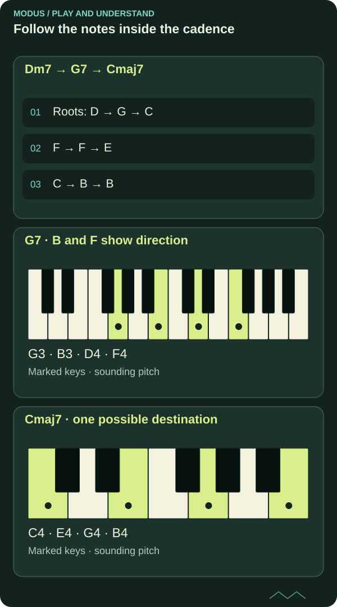

ii–V–I: why chords want to go home
Three chords can create a clear direction. Roman numerals show their roles in the key, so the same idea can move somewhere new.

Read the degrees within one key
In C major, a common ii–V–I is Dm7–G7–Cmaj7. D is the second scale degree, G the fifth and C the first. Here, lowercase Roman numerals indicate a minor chord; uppercase indicate major.
The progression starts on a minor seventh chord, moves to a dominant seventh and lands on the tonic with a major seventh. ii–V–I names a chord progression, not a mode.

Read the diagram as text
- Dm7 → G7 → Cmaj7: Roots: D → G → C; F → F → E; C → B → B
- G7 · B and F show direction: G3 → B3 → D4 → F4
- Cmaj7 · one possible destination: C4 → E4 → G4 → B4
Listen to the notes inside the chords
G7 contains G, B, D and F. B and F form a tritone. In a common resolution, B rises to C while F falls to E.
These small movements contribute to the feeling of the dominant leading towards C. Other voice leadings and uses of the dominant are possible, but this is a clear starting point for listening. The voice-leading diagram shows that both chords contain B. The separate chord examples show B3 in G7 and B4 in Cmaj7, an octave higher. To hear B held in the same voice, play G3–B3–D4–F4 followed by C3–B3–E4–G4. Then play the transition again with C4 in place of B3 in the final chord. This gives you a C-major triad without the major seventh. Listen to the difference between holding B3 and resolving it up to C4.
Move the idea without losing the connection
In G major, the same kind of cadence becomes Am7–D7–Gmaj7. Chord names change while the ii–V–I relationship stays the same. Roman numerals make comparison and transposition easier.
D Dorian can describe the notes over Dm7 in C major, but that does not make the whole cadence D Dorian. A collection of notes and a harmonic function describe different aspects of music.
Follow chord tones within one note collection
Over Dm7–G7–Cmaj7, you can start with the notes of C major. Then find F–B–E: F is the third of Dm7, B the third of G7, and E the third of Cmaj7. These are target notes, not a requirement to play a new scale over every chord.
A simpler melodic line is F–F–E. F is held from Dm7 to G7, then moves down to E over Cmaj7. Compare the two ideas slowly and choose according to the sound, not the number of notes.
FROM READING TO PLAYING
Try it yourself.
Play Dm7–G7–Cmaj7 slowly. Find F in G7 and let it move to E in Cmaj7. Then find B and try moving it to C. Sing the movements before you play them.
Listen to cadences in the theory roomCHECK YOUR UNDERSTANDING
What do you remember?
Three questions about what you have read. Get all three right to complete the quiz. Try as many times as you like.
Completion is saved in this browser and shared between Norwegian and English.
You answered all three questions correctly. Take the idea to your instrument.
Back to the article library ↗︎